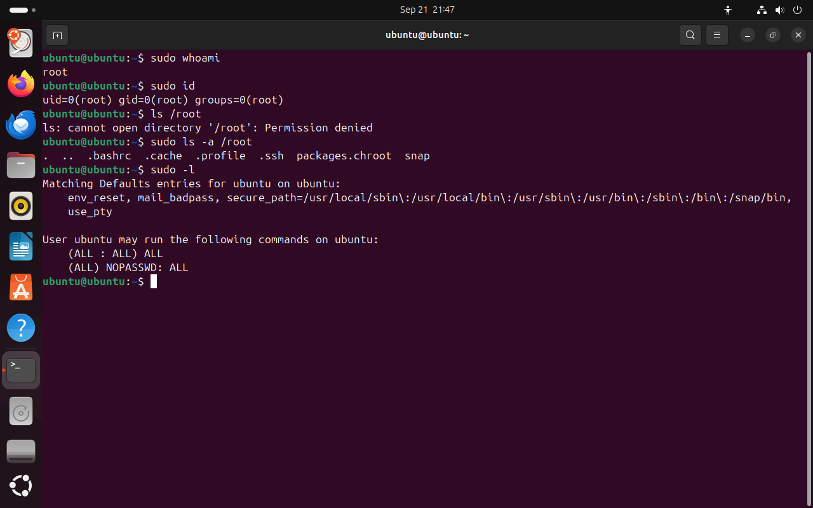
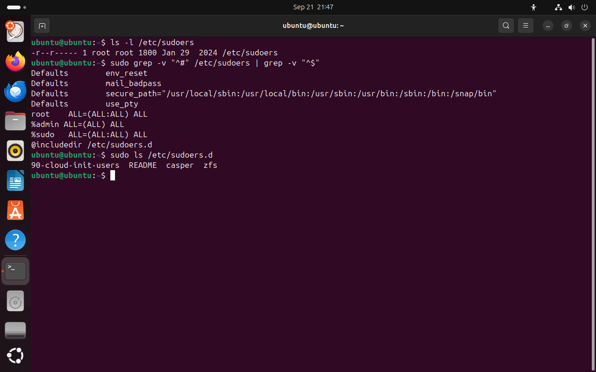
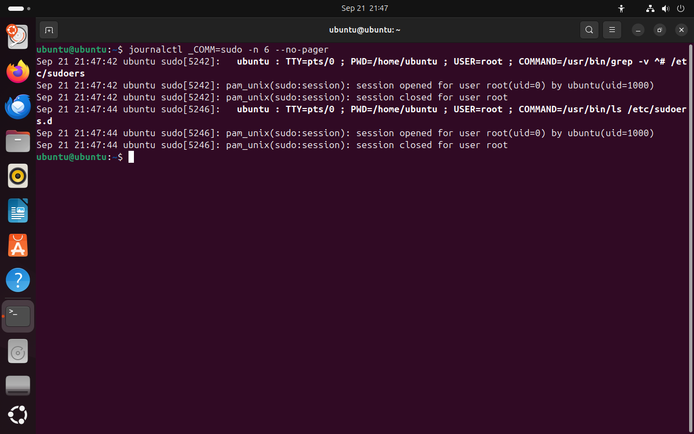
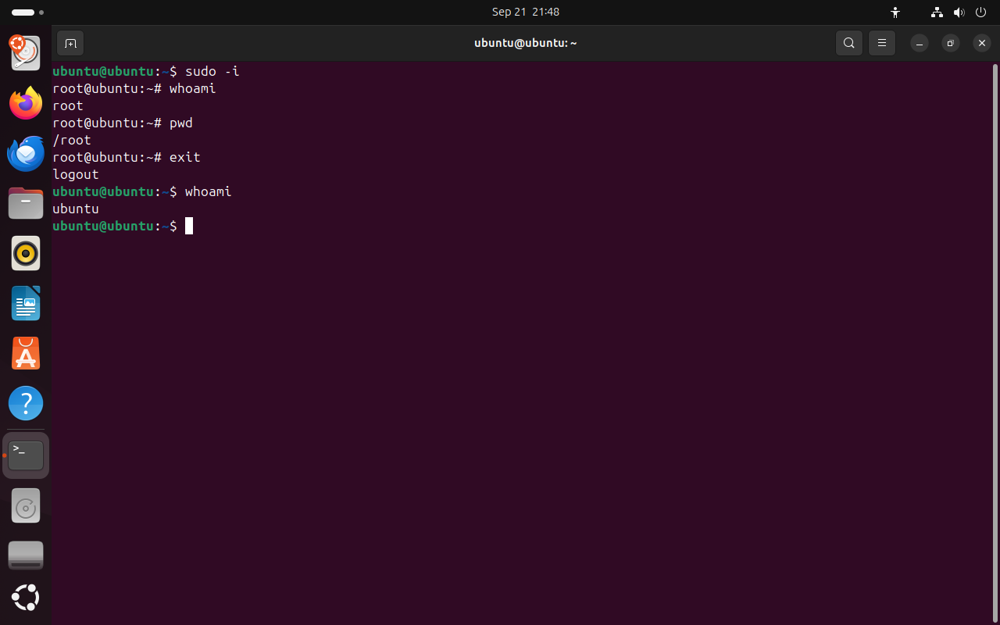

Часть 4 из 7
Суперпользователь root и sudo
В этой части разберём, чем root отличается от остальных пользователей, как sudo решает, можно ли выполнить команду от имени root, где остаются следы каждой такой команды и почему постоянно работать под root нельзя.
4.1 Суперпользователь root
Проверка прав, которую мы разбирали в части 3, выполняется для всех процессов, кроме одного случая. Если процесс работает с UID 0, ядро права на файлы не проверяет: такому процессу доступны чтение, изменение и удаление любого файла. Учётная запись с UID 0 называется root, или суперпользователь.
Права root нужны для задач, которые меняют систему целиком: установки программ, создания пользователей, изменения файлов в /etc. Обычная работа — редактирование кода, запуск программ, чтение документации — прав root не требует.
Пароль root в Ubuntu по умолчанию не задан, и войти под root напрямую нельзя. Вместо этого пользователь из группы sudo выполняет отдельные команды с правами root через программу sudo (substitute user do — «выполнить от имени другого пользователя»).
sudo whoami# от чьего имени выполнена командачто делает
Что делает команда. Выполняет whoami с правами root; команда печатает root.
По частям:
sudo- выполнить команду от имени другого пользователя, по умолчанию root
whoami- вывести имя текущего пользователя
sudo idчто делает
Что делает команда. Выполняет id с правами root; UID и GID равны 0.
По частям:
sudo- выполнить команду от имени другого пользователя, по умолчанию root
id- вывести номера пользователя и его группы
ls /root# домашний каталог rootчто делает
Что делает команда. Пытается вывести домашний каталог root от имени обычного пользователя; доступа нет.
По частям:
ls- вывести содержимое каталога
/root- что показать (абсолютный путь)
sudo ls -a /root# тот же каталог с правами rootчто делает
Что делает команда. Выводит содержимое /root вместе со скрытыми файлами с правами root.
По частям:
sudo- выполнить команду от имени другого пользователя, по умолчанию root
ls- вывести содержимое каталога
-a- показать и скрытые файлы
/root- что показать (абсолютный путь)
- 1sudo whoami: команда выполнена от имени root
- 2UID 0
- 3обычному пользователю каталог /root закрыт
- 4с правами root содержимое каталога доступно
{kind=link}

Весь снимок ↗Команды через sudo выполняются с UID 0; каталог /root закрыт для обычного пользователя.
Что показывает снимок. Команды через sudo выполняются с UID 0; каталог /root закрыт для обычного пользователя и открыт через sudo.
Где это пригодится. sudo whoami — быстрая проверка, работают ли права администратора у текущего пользователя.
4.2 Как sudo решает, можно ли выполнить команду
Программа sudo запускается с правами root: у файла /usr/bin/sudo установлен специальный бит setuid, поэтому программа работает от имени владельца файла — root — независимо от того, кто её вызвал. Получив права root, sudo проверяет, разрешено ли вызвавшему пользователю выполнить эту команду. Правила записаны в файле /etc/sudoers и в файлах каталога /etc/sudoers.d.
| Часть правила | Пример | Значение |
|---|---|---|
| кто | %sudo | знак % — группа: правило действует для всех участников sudo |
| на каком компьютере | ALL= | на любом компьютере |
| от чьего имени | (ALL:ALL) | от имени любого пользователя и любой группы |
| какие команды | ALL | любые команды |
| без пароля | NOPASSWD: | пароль не спрашивается |
Если правило найдено, sudo запрашивает пароль того пользователя, который её вызвал; пароль root для этого не нужен. После правильного ввода пароль некоторое время не спрашивается повторно: в Ubuntu 15 минут в одном терминале. Если правила нет, команда не выполняется, а попытка записывается в журнал.
Команда sudo -l выводит правила, которые действуют для текущего пользователя. Сам файл /etc/sudoers обычный пользователь прочитать не может. Изменяют его только командой sudo visudo: она проверяет синтаксис перед сохранением. Ошибка в этом файле, сохранённая обычным редактором, может отключить sudo для всех пользователей.
sudo -l# правила для текущего пользователячто делает
Что делает команда. Выводит правила sudo, которые действуют для текущего пользователя.
По частям:
sudo- выполнить команду от имени другого пользователя, по умолчанию root
-l- вывести правила sudo для текущего пользователя
ls -l /etc/sudoers# права на файл правилчто делает
Что делает команда. Выводит права на файл правил sudo.
По частям:
ls- вывести содержимое каталога
-l- подробный список: права, владелец, группа, размер
/etc/sudoers- что показать (абсолютный путь)
sudo grep -v "^#" /etc/sudoers | grep -v "^$"# правила без комментариев и пустых строкчто делает
Что делает команда. Выводит /etc/sudoers без строк-комментариев и без пустых строк.
По частям:
sudo- выполнить команду от имени другого пользователя, по умолчанию root
grep- отобрать строки, в которых есть образец
-v- отобрать строки, в которых образца нет
"^#"- образец: строки, которые начинаются с # (комментарии)
/etc/sudoers- в каком файле искать (абсолютный путь)
|- передать вывод левой команды на вход следующей
grep- отобрать строки, в которых есть образец
-v- отобрать строки, в которых образца нет
"^$"- образец: пустые строки
sudo ls /etc/sudoers.d# дополнительные файлы правилчто делает
Что делает команда. Выводит дополнительные файлы правил sudo.
По частям:
sudo- выполнить команду от имени другого пользователя, по умолчанию root
ls- вывести содержимое каталога
/etc/sudoers.d- что показать (абсолютный путь)
- 1правила, которые действуют для ubuntu
- 2правило группы sudo: любые команды от имени любого пользователя
- 3правило Live-сеанса: без пароля
sudo -l перечисляет правила для текущего пользователя.
Что показывает снимок. Для ubuntu действуют два правила: правило группы sudo и правило Live-сеанса без пароля.
Где это пригодится. sudo -l показывает, какие команды разрешены пользователю. На серверах правила часто ограничивают отдельными командами, например перезапуском одной службы.
- 1файл только для чтения, доступ — у root и группы root
- 2правило для root
- 3% — правило для группы sudo
- 4на любом компьютере, от имени любого пользователя и группы
- 5любые команды
- 6дополнительные правила из каталога sudoers.d
- 7файл, созданный Live-сеансом
{kind=link}

Весь снимок ↗Файл /etc/sudoers без комментариев.
Что показывает снимок. В /etc/sudoers правила для root, групп admin и sudo и подключение каталога sudoers.d; файл только для чтения.
Где это пригодится. Собственные правила добавляют отдельным файлом в /etc/sudoers.d через sudo visudo -f: основной файл остаётся без изменений.
На схеме ниже показан путь команды sudo whoami для трёх пользователей: ubuntu в Live-сеансе, viktor, который не состоит в группе sudo, и пользователя установленной Ubuntu из группы sudo. Первые два сценария совпадают со снимками занятия.
- 1Пользователь вводит команду
- 2sudo запускается с правами root
- 3Поиск правила в /etc/sudoers
- 4Проверка пароля
- 5Команда выполняется от имени root
- 6Запись в журнал
4.3 Журнал sudo
Каждый вызов sudo записывается в системный журнал: кто вызвал, в каком терминале, в каком каталоге, от чьего имени и какую команду. По этим записям администратор восстанавливает, кто и когда менял систему. Журнал читает команда journalctl; условие _COMM=sudo отбирает записи программы sudo, -n 6 — последние шесть.
journalctl _COMM=sudo -n 6 --no-pager# последние записи sudoчто делает
Что делает команда. Выводит шесть последних записей журнала от программы sudo.
По частям:
journalctl- прочитать системный журнал
_COMM=sudo- только записи программы sudo
-n 6- вывести последние 6 записей
--no-pager- вывести сразу в терминал, без постраничного просмотра
- 1время записи
- 2кто вызвал sudo
- 3терминал
- 4каталог, в котором выполнялась команда
- 5от чьего имени выполнена команда
- 6полная команда
- 7сеанс root открыт и закрыт
{kind=link}

Весь снимок ↗Каждая команда через sudo оставляет запись в журнале.
Что показывает снимок. Каждая команда через sudo оставила три записи: кто, где и что выполнил, открытие и закрытие сеанса root.
Где это пригодится. При разборе сбоя на сервере по этим записям восстанавливают, кто и какую команду выполнил с правами root.
4.4 Оболочка root: sudo -i
Команда sudo -i открывает командную оболочку root: все следующие команды выполняются с UID 0 без слова sudo перед ними. Приглашение меняется: вместо имени пользователя стоит root, а знак $ заменяется на #. Команда exit закрывает оболочку root и возвращает к обычному пользователю.
В журнал в этом случае попадает только сама команда sudo -i. Команды внутри оболочки root отдельно не записываются, поэтому по журналу уже нельзя восстановить, какие команды выполнил администратор.
sudo -i# открыть оболочку rootчто делает
Что делает команда. Открывает командную оболочку root. Выход — exit.
По частям:
sudo- выполнить команду от имени другого пользователя, по умолчанию root
-i- открыть оболочку root с полным входом
whoami# внутри оболочки rootpwdexit# вернуться к обычному пользователюwhoamiчто делает
Что делает команда. Выводит имя пользователя, от имени которого работает оболочка.
По частям:
whoami- вывести имя текущего пользователя
- 1приглашение root заканчивается знаком #
- 2домашний каталог root — /root
- 3exit закрывает оболочку root
- 4снова обычный пользователь: знак $
{kind=link}

Весь снимок ↗Оболочка root: знак # в приглашении и домашний каталог /root.
Что показывает снимок. В оболочке root приглашение заканчивается знаком #, текущий каталог — /root; после exit снова пользователь ubuntu.
Где это пригодится. По знаку # в приглашении сразу видно, что команды выполняются с правами root, и можно вовремя закрыть оболочку.
4.5 Принцип минимальных привилегий
Постоянная работа под root нарушает этот принцип. У root нет защиты от ошибок: система не остановит ни опечатку, ни вредную программу. Работа через sudo оставляет права root только для отдельных команд и записывает каждую из них в журнал.
| Что случается под root | Пример |
|---|---|
| опечатка удаляет системные файлы | rm -rf /etc/app вместо rm -rf ./etc/app: из-за пропущенной точки путь ведёт в системный каталог /etc |
| программа получает все права | скрипт из интернета или пакет с ошибкой меняет любые файлы системы |
| файлы получают не того владельца | файл, созданный root в каталоге проекта, другие участники не могут изменить |
| не видно, кто что сделал | команды внутри sudo -i не попадают в журнал по отдельности |
- 1Работайте под своей учётной записью;
sudoдобавляйте только к командам, которые меняют систему. - 2Перед командой с
sudoпрочитайте её целиком ещё раз: у неё нет ограничений. - 3Не открывайте
sudo -iбез необходимости и закрывайте оболочку root командойexitсразу после работы. - 4В группу
sudoдобавляйте только тех, кто администрирует систему.
Итоги части 4
- root — учётная запись с UID 0; для её процессов права на файлы не проверяются.
sudoвыполняет команду от имени root, если в/etc/sudoersесть правило для пользователя или его группы.- sudo спрашивает пароль вызвавшего пользователя;
sudo -lвыводит действующие правила; править правила — только черезvisudo. - Каждый вызов sudo записывается в журнал; команды внутри
sudo -i— нет. - Принцип минимальных привилегий: права root — только для отдельных команд и только когда они нужны.
В отчётСнимок sudo -l и снимок записей sudo в журнале с подписанными полями.